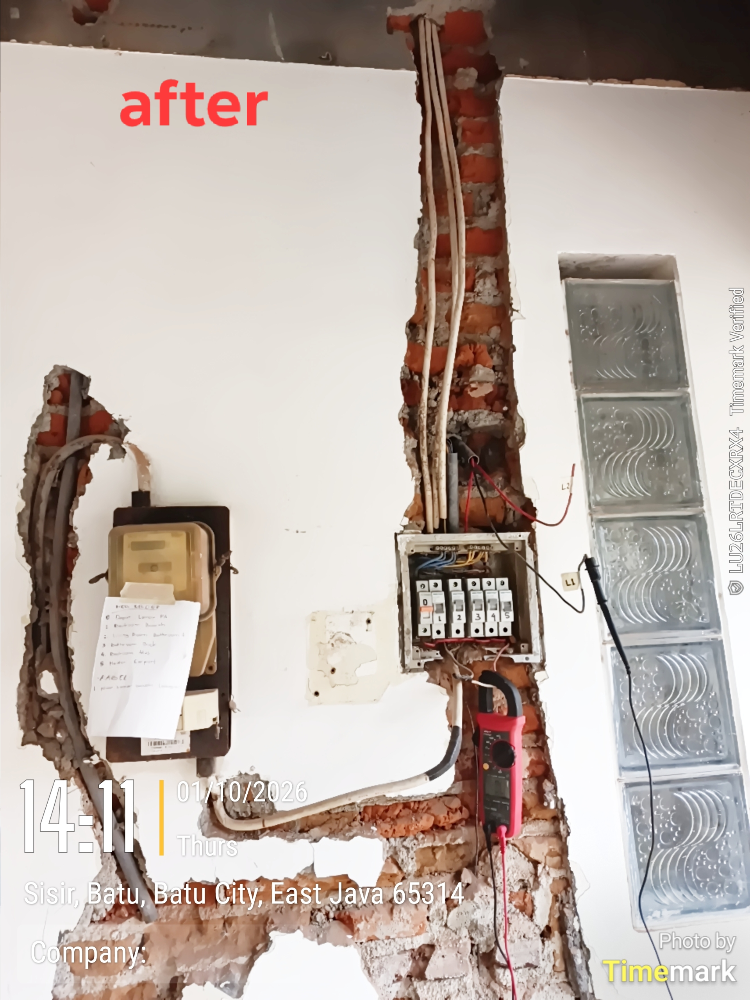

Dokumentasi ini merangkum proses pengerjaan kelistrikan di mana sistem ditingkatkan dari 1-phase menjadi 3-phase untuk mengakomodasi penambahan beban daya yang terpusat pada Main SDP.
Jalur distribusi daya dibagi secara spesifik, termasuk pembuatan panel distribusi terpisah untuk area kolam. Untuk menjamin tingkat keamanan instalasi tertinggi, sistem dilengkapi dengan kontaktor dan proteksi utama RCBO Tipe A yang lebih sensitif terhadap arus DC bergelombang maupun arus bocor.

Sistem ini juga diperkuat dengan penanaman grounding rod lokal pada titik-titik krusial untuk memastikan nilai resistansi sebaran pembumian beroperasi optimal.